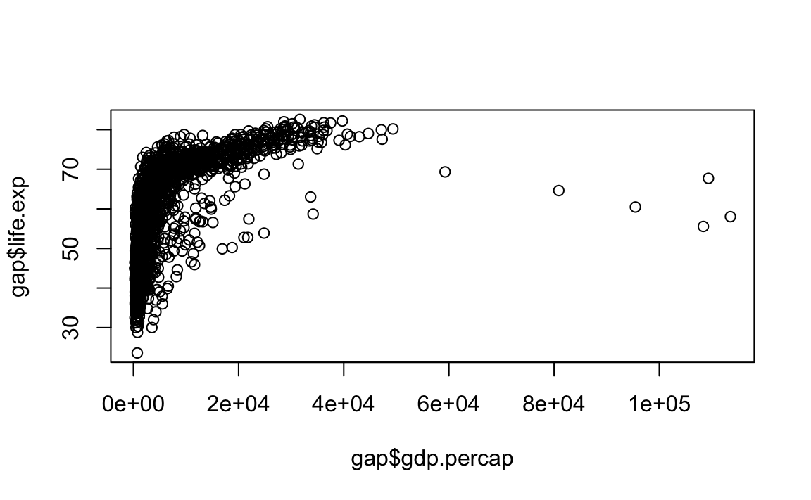
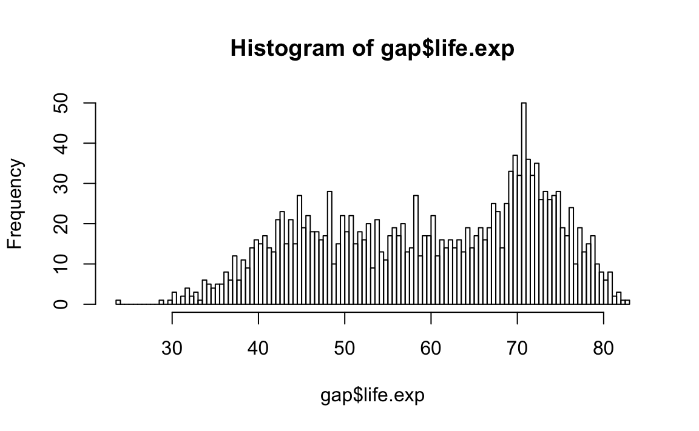

Chapter 8 Working with Data
Insert some introduction here.
8.1 Project Workflow
One day…
- you will need to quit R, go do something else, and return to your analysis the next day.
- you will be working on multiple projects simultaneously, and you’ll want to keep them separate.
- you will need to bring data from the outside world into R, and send numerical results and figures from R back out into the world.
This unit teaches these topics.
8.1.1 Store Analyses in Scripts, Not Workspaces.
R Studio automatically preserves your workspace (environment and command history) when you quit R, and re-loads it the next session. I recommend you turn this behavior off.

This will cause you some short-term pain, because now when you restart RStudio, it will not remember the results of the code that you ran last time. But this short-term pain will save you long-term agony, because it forces you to capture all important interactions in your scripts.
8.1.2 Working Directories and Paths
Like many programming languages, R has a powerful notion of the working directory. This is where R looks for files that you ask it to load, and where it will put any files that you ask it to save.
RStudio shows your current working directory at the top of the console. You can print this out in R code by running getwd():
getwd()
#> [1] "/Users/rochelleterman/Desktop/plsc-31101"I do not recommend it, but you can set the working directory from within R:
setwd("/path/to/my/CoolProject")The command above prints out a path to your working directory. Think of a path as an address. Paths are incredibly important in programming, but can be a little tricky. Let’s go into a bit more detail.
Absolute Paths
Absolute paths are paths that point to the same place regardless of your current working directory. They always start with the root directory that holds everything else on your computer.
- In Windows, absolute paths start with a drive letter (e.g.
C:) or two backslashes (e.g.\\servername). - In Mac/Linux they start with a slash
/. This is the leading slash in/users/rterman.
Inside the root directory are several other directories, which we call subdirectories. We know that the directory /home/rterman is stored inside /home because /home is the first part of its name. Similarly, we know that /home is stored inside the root directory / because its name begins with /.
Notice that there are two meanings for the
/character. When it appears at the front of a file or directory name, > it refers to the root directory. When it appears inside a name, > it’s just a separator.
Mac/Linux vs. Windows
There are two basic styles of paths: Mac/Linux and Windows. The main difference is how you separate the components of the path. Mac and Linux use slashes (e.g. plots/diamonds.pdf) and Windows uses backslashes (e.g. plots\diamonds.pdf).
R can work with either type, no matter what platform you’re currently using. Unfortunately, backslashes mean something special to R, and to get a single backslash in the path, you need to type two backslashes! That makes life frustrating, so I recommend always using the Linux/Mac style with forward slashes.
Home Directory
Sometimes you’ll see a ~ character in a path. * In Mac/Linux, the ~ is a convenient shortcut to your home directory (/users/rterman). * Windows doesn’t really have the notion of a home directory, so it usually points to your documents directory (C:\Documents and Settings\rterman)
Absolute vs. Relative Paths
You should try not to use absolute paths in your scripts, because they hinder sharing: no one else will have exactly the same directory configuration as you. Another way to direct R to something is to give it a relative path.
Relative paths point to something relative to where you are, rather than from the root of the file system. For example, if your current working directory is /home/rterman, then the relative path data/un.csv directs to the full absolute path: /home/rterman/data/un.csv
8.1.3 R Projects
As a beginning R user, it’s OK to let your home directory, documents directory, or any other weird directory on your computer be R’s working directory.
But from this point forward, you should be organizing your projects into dedicated subdirectories, containing all the files associated with a project — input data, R scripts, results, figures.
This is such a common practice that RStudio has built-in support for this via projects.
Let’s make a project together. Click File > New Project, then:
{kind=link}
Think carefully about which subdirectory you put the project in. If you don’t store it somewhere sensible, it will be hard to find in the future!
Once this process is complete, you’ll get a new RStudio project. Check that the “home” directory of your project is the current working directory:
getwd()
#> [1] "/Users/rochelleterman/Desktop/plsc-31101"Now whenever you refer to a file with a relative path, it will look for it there.
Go ahead and create a new R script and save it inside the project folder.
Quit RStudio. Inspect the folder associated with your project — notice the .Rproj file. Double-click that file to re-open the project. Notice you get back to where you left off: it’s the same working directory and command history, and all the files you were working on are still open. Because you followed my instructions above, you will, however, have a completely fresh environment, guaranteeing that you’re starting with a clean slate.
8.1.4 File Organization
You should be saving all your files associated with your project in one directory. Here’s a basic organization structure that I recommend:
~~~
masters_thesis:
masters_thesis.Rproj
01_Clean.R
02_Model.R
03_Visualizations.R
Data/
raw/
un-raw.csv
worldbank-raw.csv
cleaned/
country-year.csv
Results:
regressions
h1.txt
h2.txt
figures
bivariate.pdf
bar_plot.pdf
~~~Here are some important tips:
- read raw data from the
Datasubdirectory. Don’t ever change or overwrite the raw data! - export cleaned and altered data into a separate directory.
- write separate scripts for each stage in the research pipeline. Keep scripts short and focused on one main purpose. If a script gets too long, that might be a sign you need to split it up.
- write scripts that reproduce your results and figures, and write them in the
Resultssubdirectory.
Acknowledgements
This page is in part derived from the following sources:
8.2 Introduction to Data
The upcoming weeks will be focused on using R for data cleaning and analysis. Let’s first get on the same page with some terms:
A variable is a quantity, quality, or property that you can measure.
An observation is a set of measurements for the same unit. An observation will contain several values, each associated with a different variable. I’ll sometimes refer to an observation as a data point or an element.
A value is the state of a variable for a particular observation.
Tabular data is a set of values, each associated with a variable and an observation. Tabular data has rows (observations) and columns (variables). Also called rectangular data or spreadsheets.

8.2.1 Where’s my data?
To start, you first need to know where your data lives. Sometimes, the data is stored as a file on your computer, e.g. csv, Excel, SPSS, or some other file type. When the data is on your computer, we say the data is stored locally.
Data can also be stored externally on the Internet, in a package, or obtained through other sources. For example, some R packages contain datasets. The nycflights13 package contains information on flights that departed NYC in 2013.
# not run
# install.packages("nycflights13")
library(nycflights13)
data(flights)
names(flights)
#> [1] "year" "month" "day" "dep_time"
#> [5] "sched_dep_time" "dep_delay" "arr_time" "sched_arr_time"
#> [9] "arr_delay" "carrier" "flight" "tailnum"
#> [13] "origin" "dest" "air_time" "distance"
#> [17] "hour" "minute" "time_hour"
rm(flights)
# Later in this course, we’ll discuss how to obtain data from web APIs and websites. For now, the rest of the unit discusses data that is stored locally.
8.2.2 Data Storage
Ideally, your data should be stored in a certain file format. I recommend a csv (comma separated value) file, which formats spreadsheet (rectangular) data in a plain-text format. csv files are plain-text, and can be read into almost any statistical software program, including R. Try to avoid Excel files if you can.
Here are some other tips:
- When working with spreadsheets, the first row is usually reserved for the header, while the first column is used to identify the sampling unit (unique identifier, see below.)
- Avoid file names and variable names with blank spaces. This can cause errors when reading in data.
- If you want to concatenate words, insert a
.or_in between to words instead of a space; - Short names are prefered over longer names;
- Try to avoid using names that contain symbols such as
?,$,%,^,&,*,(,),-,#,?,,,<,>,/,|,\,[,],{, and}; - make sure that any missing values in your data set are indicated with
NAor blank fields (don’t use 99 or 77)..
8.2.3 tidy Data
Datasets in the wild can often be messy. For example, check out the following data.
messy <- data.frame(
county = c(36037, 36038, 36039, 36040, NA , 37001, 37002, 37003),
state = c('NY', 'NY', 'NY', NA, NA, 'VA', 'VA', 'VA'),
cnty_pop = c(3817735, 422999, 324920, 143432, NA, 3228290, 449499, 383888),
state_pop = c(43320903, 43320903, NA, 43320903, 43320903, 7173000, 7173000, 7173000),
region = c(1, 1, 1, 1, 1, 3, 3, 4)
)
messy
#> county state cnty_pop state_pop region
#> 1 36037 NY 3817735 43320903 1
#> 2 36038 NY 422999 43320903 1
#> 3 36039 NY 324920 NA 1
#> 4 36040 <NA> 143432 43320903 1
#> 5 NA <NA> NA 43320903 1
#> 6 37001 VA 3228290 7173000 3
#> 7 37002 VA 449499 7173000 3
#> 8 37003 VA 383888 7173000 4What a mess! How can the population of the state of New York be 43 million for one county but “missing” for another? If this is a dataset of counties, what does it mean when the “county” field is missing? If region is something like Census region, how can two counties in the same state be in different regions? And why is it that all the counties whose codes start with 36 are in New York except for one, where the state is unknown?
The goal should be to put our data in a tidy format. The two most important properties of tidy data are:
- Each variable forms a column.
- Each observation forms a row.
- Each type of observational unit forms a table.
If we follow these principles, our data should look like:
counties <- data.frame(
county = c(36037, 36038, 36039, 36040, 37001, 37002, 37003),
state = c('NY', 'NY', 'NY', 'NY', 'VA', 'VA', 'VA'),
population = c(3817735, 422999, 324920, 143432, 3228290, 449499, 383888)
)
counties
#> county state population
#> 1 36037 NY 3817735
#> 2 36038 NY 422999
#> 3 36039 NY 324920
#> 4 36040 NY 143432
#> 5 37001 VA 3228290
#> 6 37002 VA 449499
#> 7 37003 VA 383888
states <- data.frame(
state = c("NY", "VA"),
population = c(43320903, 7173000),
region = c(1, 3)
)
states
#> state population region
#> 1 NY 43320903 1
#> 2 VA 7173000 3Now the ambiguity is gone. Every county has a population and a state. Every state has a population and a region. There are no missing states, no missing counties, and no conflicting definitions. The database is self-documenting. In fact, the database is now so clear that we can forget about names like county_pop and state_pop and just stick to “population.” Anyone would know which entity’s population you mean.
We’ll talk more about tidying data in later units.
8.2.4 Relational data
Collectively, multiple tables of data are called relational data because it is the relations, not just the individual datasets, that are important. Note that when we say relational database here, we are referring to how the data are structured, not to the use of any fancy software.
The main principle of relational data is that each table is structured around the same observational unit.
- counties contains data on counties.
- states contains data on states
County population is a property of a county, so it lives in the county table. State population is a property of a state, so it cannot live in the county table. If we had panel data on counties, we would need separate tables for things that vary at the county level (like state) and things that vary at the county-year level (like population).
8.2.5 Keys
The variables that connect each pair of tables are called keys. A key is a variable (or set of variables) that uniquely identifies an observation. It is also called a unique identifier.
- Keys are complete. They never take on missing values.
- Keys are unique. They are never duplicated across rows of a table.
In simple cases, a single variable is sufficient to identify an observation. In the example above, each county is identified with county (a numeric identifier); each state is identified with state (a two-letter string).
There are two types of keys:
A primary key uniquely identifies an observation in its own table. For example,
counties$countyis a primary key because it uniquely identifies each county in the counties table.A foreign key uniquely identifies an observation in another table. For example,
counties$stateis a foreign key because it appears in the counties table where it matches each county to a unique state.
A primary key and the corresponding foreign key in another table form a relation.
Sometimes a table doesn’t have an explicit primary key: each row is an observation, but no combination of variables reliably identifies it. If a table lacks a primary key, it’s useful to add one.
Acknowledgements
This page is in part derived from the following sources:
8.3 Importing and Exporting
8.3.1 Importing Data
Find Paths First
In order to import (or read) data into R, you first have to know where it is, and how to find it.
First, remember that you’ll need to know the current working directory so that you know where R is looking for files. If you’re using R Projects, that working directory will be the top-level directory of the project.
Second, you’ll need to know where the data file is, relative to your working directory. If it’s stored in the Data/raw/ folder, the relative path to your file will be Data/raw/file-name.csv
Reading Tabular Data
The workhorse for reading into a data frame is read.table(), which allows any separator (CSV, tab-delimited, etc.). read.csv() is a special case of read.table() for CSV files.
The basic formula is:
# Basic CSV read: Import data with header row, values separated by ",", decimals as "."
mydataset <- read.csv(file=" ", stringsAsFactors=)Here’s a practical example, using the polityVI dataset:
#import polity
polity <- read.csv("data/polity.csv", stringsAsFactors = F)
polity[1:5, 1:5]
#> cyear ccode scode country year
#> 1 7001800 700 AFG Afghanistan 1800
#> 2 7001801 700 AFG Afghanistan 1801
#> 3 7001802 700 AFG Afghanistan 1802
#> 4 7001803 700 AFG Afghanistan 1803
#> 5 7001804 700 AFG Afghanistan 1804We use stringsAsFactors = F in order to treat text columns as character vectors, not as factors. If we don’t set this, the default is that all non-numerical columns will be encoded as factors. This behavior usually makes poor sense, and is due to historical reasons. At one point in time, factors were faster than character vectors, so R’s read.table() set the default to read in text as factors.
read.table() has a number of other options:
# For importing tabular data with maximum customizeability
mydataset <- read.table(file=, header=, sep=, quote=, dec=, fill=, stringsAsFactors=)Reading Excel Files
Don’t use Microsoft Excel files (.xls or .xlsx). But if you must:
# Make sure you have installed the tidyverse suite (only necessary one time)
# install.packages("tidyverse") # Not Run
# Load the "readxl" package (necessary every new R session)
library(readxl)read_excel() reads both xls and xlsx files and detects the format from the extension.
# Basic call
mydataset <- read_excel(path = , sheet = ")Here’s a real example:
# Example with .xlsx (single sheet)
air <- read_excel("data/airline_small.xlsx", sheet = 1)
air[1:5, 1:5]
#> # A tibble: 5 x 5
#> Year Month DayofMonth DayOfWeek DepTime
#> <dbl> <dbl> <dbl> <dbl> <chr>
#> 1 2005 11 22 2 1700
#> 2 2008 1 31 4 2216
#> 3 2005 7 17 7 905
#> 4 2008 9 23 2 859
#> 5 2005 3 5 6 827Reading Stata (.dta) Files
There are many ways to read .dta files into R. I recommend using haven because it is part of the tidyverse.
library(haven)
air.dta <- read_dta("data/airline_small.dta")
air[1:5, 1:5]
#> # A tibble: 5 x 5
#> Year Month DayofMonth DayOfWeek DepTime
#> <dbl> <dbl> <dbl> <dbl> <chr>
#> 1 2005 11 22 2 1700
#> 2 2008 1 31 4 2216
#> 3 2005 7 17 7 905
#> 4 2008 9 23 2 859
#> 5 2005 3 5 6 827For Really Big Data
If you have really big data, read.csv() will be too slow. In these cases, check out the following options:
read_csv()in thereadrpackage is a faster, more helpful drop-in replacement forread.csv()that plays well with tidyverse packages (discussed in future lessons).- the
data.tablepackage is great for reading and manipulating large datasets (orders of gigabytes or 10s of gigabytes)
8.3.2 Exporting Data
You should never go from raw data to results in one script. Typically, you’ll want to import raw data, clean it, and then export that cleaned dataset onto your computer. That cleaned dataset will then be imported into another script for analysis, in a modular fashion.
To export (or write) data from R onto your computer, you can create individual .csv files, or export many data objects into an .RData object.
Writing a csv Spreadsheet
To export an individual dataframe as a spreadsheet, use write.csv()
# Basic call
write.csv(x = , file = , row.names = , col.names =)Let’s write the air dataset as a csv.
# Basic call
write.csv(air, "data/airlines.csv", row.names = F)Packaging Data into .RData
Sometimes, it’s helpful to write several dataframes at once, to be used in later analysis. To do so, we use the save() function to create one file containing many R data objects.
# Basic call
save(..., file = )Here’s how we can write both air and polity into one file.
save(air, polity, file = "data/datasets.RData")We can then read these datasets back into R using load()
# clear environment
rm(list=ls())
# load datasets
load("data/datasets.RData")8.4 Exploring Data
8.4.1 The Gapminder Dataset
This lesson discusses how to perform basic exploratory data analysis.
For this unit, we’ll be working with the “Gapminder” dataset, which is an excerpt of the data available at Gapminder.org. For each of 142 countries, the data provides values for life expectancy, GDP per capita, and population, every five years, from 1952 to 2007.
gap <- read.csv("data/gapminder.csv", stringsAsFactors = F)8.4.2 Structure and Dimensions
The first things we want to know about a dataset are its dimensions and basic structure. For instance, we can look at the number of rows and columns:
# get number of rows and columns:
dim(gap)
#> [1] 1704 6We might also want to see the names of the columns:
# see column names
names(gap)
#> [1] "country" "year" "pop" "continent" "lifeExp" "gdpPercap"The str function is helpful to see an overview of the data’s structure:
# see structure of data
str(gap)
#> 'data.frame': 1704 obs. of 6 variables:
#> $ country : chr "Afghanistan" "Afghanistan" "Afghanistan" "Afghanistan" ...
#> $ year : int 1952 1957 1962 1967 1972 1977 1982 1987 1992 1997 ...
#> $ pop : num 8425333 9240934 10267083 11537966 13079460 ...
#> $ continent: chr "Asia" "Asia" "Asia" "Asia" ...
#> $ lifeExp : num 28.8 30.3 32 34 36.1 ...
#> $ gdpPercap: num 779 821 853 836 740 ...Finally, I encourage you to actually peak at the data itself. The head function displays the first 6 rows of any dataframe.
head(gap)
#> country year pop continent lifeExp gdpPercap
#> 1 Afghanistan 1952 8425333 Asia 28.8 779
#> 2 Afghanistan 1957 9240934 Asia 30.3 821
#> 3 Afghanistan 1962 10267083 Asia 32.0 853
#> 4 Afghanistan 1967 11537966 Asia 34.0 836
#> 5 Afghanistan 1972 13079460 Asia 36.1 740
#> 6 Afghanistan 1977 14880372 Asia 38.4 7868.4.3 Common Alterations
There are some very common alterations researchers make on their data: changing column names, assigning NA values, and changing column types.
Note that we will cover how to perform these functions using the tidyverse later in the course. However, these lines are very common, so it’s good to know how they work:
- change column names
names(gap)
#> [1] "country" "year" "pop" "continent" "lifeExp" "gdpPercap"
names(gap) <- c("country", "year", "pop", "continent", "life.exp", "gdp.percap")
str(gap)
#> 'data.frame': 1704 obs. of 6 variables:
#> $ country : chr "Afghanistan" "Afghanistan" "Afghanistan" "Afghanistan" ...
#> $ year : int 1952 1957 1962 1967 1972 1977 1982 1987 1992 1997 ...
#> $ pop : num 8425333 9240934 10267083 11537966 13079460 ...
#> $ continent : chr "Asia" "Asia" "Asia" "Asia" ...
#> $ life.exp : num 28.8 30.3 32 34 36.1 ...
#> $ gdp.percap: num 779 821 853 836 740 ...- Change some values to
NA
gap$life.exp[gap$life.exp < 0 ] <- NA- Coerce columns to a specific type. For instance, let’s change
continentfrom character to factor.
summary(gap$continent)
#> Length Class Mode
#> 1704 character character
gap$continent <- as.factor(gap$continent)
summary(gap$continent)
#> Africa Americas Asia Europe Oceania
#> 624 300 396 360 248.4.4 Summary statistics
We can get quick summary statistics using summary. Passing the entire dataframe will summarize all columns:
summary(gap)
#> country year pop continent
#> Length:1704 Min. :1952 Min. :6.00e+04 Africa :624
#> Class :character 1st Qu.:1966 1st Qu.:2.79e+06 Americas:300
#> Mode :character Median :1980 Median :7.02e+06 Asia :396
#> Mean :1980 Mean :2.96e+07 Europe :360
#> 3rd Qu.:1993 3rd Qu.:1.96e+07 Oceania : 24
#> Max. :2007 Max. :1.32e+09
#> life.exp gdp.percap
#> Min. :23.6 Min. : 241
#> 1st Qu.:48.2 1st Qu.: 1202
#> Median :60.7 Median : 3532
#> Mean :59.5 Mean : 7215
#> 3rd Qu.:70.8 3rd Qu.: 9325
#> Max. :82.6 Max. :113523Passing a column with summarize that particular column:
summary(gap$year)
#> Min. 1st Qu. Median Mean 3rd Qu. Max.
#> 1952 1966 1980 1980 1993 2007Sometimes we need to do some basic checking for the number of observations or types of observations in our dataset. To do this quickly and easily, table() is our friend.
Let’s look at the number of observations first by region, and then by both region and year.
table(gap$continent)
#>
#> Africa Americas Asia Europe Oceania
#> 624 300 396 360 24
table(gap$continent, gap$year)
#>
#> 1952 1957 1962 1967 1972 1977 1982 1987 1992 1997 2002 2007
#> Africa 52 52 52 52 52 52 52 52 52 52 52 52
#> Americas 25 25 25 25 25 25 25 25 25 25 25 25
#> Asia 33 33 33 33 33 33 33 33 33 33 33 33
#> Europe 30 30 30 30 30 30 30 30 30 30 30 30
#> Oceania 2 2 2 2 2 2 2 2 2 2 2 2We can even divide by the total number of rows to get proportion, percent, etc.
table(gap$continent)/nrow(gap)
#>
#> Africa Americas Asia Europe Oceania
#> 0.3662 0.1761 0.2324 0.2113 0.0141
table(gap$continent)/nrow(gap)*100
#>
#> Africa Americas Asia Europe Oceania
#> 36.62 17.61 23.24 21.13 1.418.4.5 Review of Subsetting
We learned about subsetting in the previous lesson. Let’s do a quick review here:
# Extract first 10 rows
gap[1:10, ]
#> country year pop continent life.exp gdp.percap
#> 1 Afghanistan 1952 8425333 Asia 28.8 779
#> 2 Afghanistan 1957 9240934 Asia 30.3 821
#> 3 Afghanistan 1962 10267083 Asia 32.0 853
#> 4 Afghanistan 1967 11537966 Asia 34.0 836
#> 5 Afghanistan 1972 13079460 Asia 36.1 740
#> 6 Afghanistan 1977 14880372 Asia 38.4 786
#> 7 Afghanistan 1982 12881816 Asia 39.9 978
#> 8 Afghanistan 1987 13867957 Asia 40.8 852
#> 9 Afghanistan 1992 16317921 Asia 41.7 649
#> 10 Afghanistan 1997 22227415 Asia 41.8 635
# Extract county year for first 10 rows
gap[1:10, c("country", "year")]
#> country year
#> 1 Afghanistan 1952
#> 2 Afghanistan 1957
#> 3 Afghanistan 1962
#> 4 Afghanistan 1967
#> 5 Afghanistan 1972
#> 6 Afghanistan 1977
#> 7 Afghanistan 1982
#> 8 Afghanistan 1987
#> 9 Afghanistan 1992
#> 10 Afghanistan 1997
# Extract observations in Africa
africa <- gap[gap$continent=="Africa",]
# Find average life expectancy for observations in Africa
mean(gap$life.exp[gap$continent=="Africa"])
#> [1] 48.9
mean(africa$life.exp)
#> [1] 48.98.4.6 Basic Plotting
We’ll go into plotting in greater detail soon, but let’s touch on two common graphs. First, a scatterplot:
plot(gap$life.exp ~ gap$gdp.percap)
Finally, let’s quickly take a look at a histogram of the variable nyt.count:
hist(gap$life.exp, breaks = 100)
8.4.7 Challenges
Challenge 1. Read the polity dataset.
polity <- read.csv("data/polity.csv", stringsAsFactors = F)Challenge 2. Report the number and names of each variable in the dataset.
dim(polity)
#> [1] 16727 36
names(polity)
#> [1] "cyear" "ccode" "scode" "country" "year" "flag"
#> [7] "fragment" "democ" "autoc" "polity" "polity2" "durable"
#> [13] "xrreg" "xrcomp" "xropen" "xconst" "parreg" "parcomp"
#> [19] "exrec" "exconst" "polcomp" "prior" "emonth" "eday"
#> [25] "eyear" "eprec" "interim" "bmonth" "bday" "byear"
#> [31] "bprec" "post" "change" "d4" "sf" "regtrans"Challenge 3. Extract the 5th row from the polity dataset.
polity[5, ]
#> cyear ccode scode country year flag fragment democ autoc polity
#> 5 7001804 700 AFG Afghanistan 1804 0 NA 1 7 -6
#> polity2 durable xrreg xrcomp xropen xconst parreg parcomp exrec exconst
#> 5 -6 NA 3 1 1 1 3 3 1 1
#> polcomp prior emonth eday eyear eprec interim bmonth bday byear bprec
#> 5 6 NA NA NA NA NA NA NA NA NA NA
#> post change d4 sf regtrans
#> 5 NA NA NA NA NAChallenge 4. Extract the last row from the polity dataset.
Challenge 5. Count the percentage of observations with a value of polity2 greater than 8 in the gapminder dataset.
(Hint: if using sum(), read the help file..)
Challenge 6. Set all of the values of democ and autac columns less than -10 to NA.
(Hint: You should first copy the polity object and work on the copy so that the original dataset is unchanged (or just read the data into R again afterwards to get a clean copy)